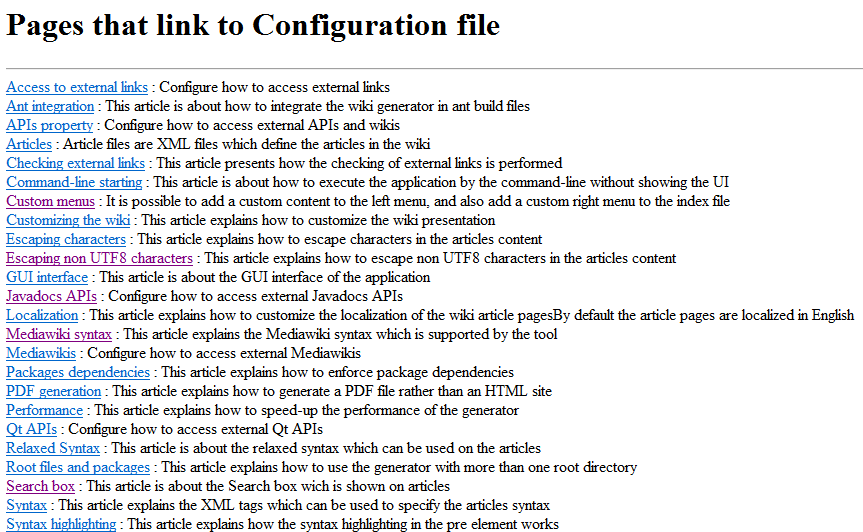
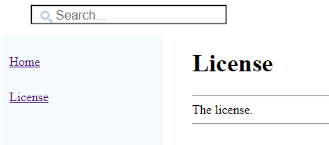
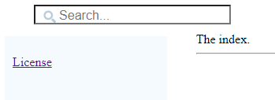

Home
Categories
Dictionary
Download
Project Details
Changes Log
What Links Here
How To
Syntax
FAQ
License
Custom left menu
1 Adding custom items to the left menu
1.1 Items refering to articles in the wiki
1.2 Items refering to the glossary
1.3 Items refering to external web pages
1.4 The What links here item
2 Adding custom HTML content to the left menu
3 Completely change the left menu
4 Default menu items
4.1 Example
5 Notes
6 See also
1.1 Items refering to articles in the wiki
1.2 Items refering to the glossary
1.3 Items refering to external web pages
1.4 The What links here item
2 Adding custom HTML content to the left menu
3 Completely change the left menu
4 Default menu items
4.1 Example
5 Notes
6 See also
It is possible to add custom items in the left menu, or even to completely change it.
This element has as many
The "itemInternalRef" element refer to articles in the wiki. The "id" attribute specifies the article reference as in the ref element in articles.
Note that there won't be any "What links here" page if the associated Menu item is not present.
And on articles:
Adding custom items to the left menu
To add custom items to the left menu, you have to define a file with a "leftMenu" top-element. This element has aonIndex attribute allowing to define if the menu items will be added to the index article only or to all the articles.This element has as many
menuItem children as there are additional menu items in the menu:- The "desc" attribute specifies the text to show in the menu
- The element can have:
- One
itemInternalRefchild for items refering to articles or other interwiki links, - Or one
itemExternalRefchild for items refering to external web pages, - Or one
itemGlossaryRefchild for items refering to the glossary[1]If there is a glossary, - Or one
linksFromRefchild for the item refering to the "What links here" content for each article
- One
<leftMenu onIndex="true"> <menuItem desc="Website" > <itemExternalRef url="http://sourceforge.net/projects/docjgenerator/" /> </menuItem> <menuItem desc="What links here" > <linksFromRef /> </menuItem> <menuItem desc="License" > <itemInternalRef id="License" /> </menuItem> </leftMenu>
Items refering to articles in the wiki
Main Article: References
The "itemInternalRef" element refer to articles in the wiki. The "id" attribute specifies the article reference as in the ref element in articles.
Items refering to the glossary
The "glossaryRef" element refer to the glossary (if it exists). Note that if there is a glossary but no "glossaryRef" element in the left menu, the glossary will be added automatically at the end of the left menu.Items refering to external web pages
The "itemExternalRef" element refer to external web pages. The "url" attribute specifies the URL of the web page.The What links here item
The "linksFromRef" element refer to a "What links here" page as it exists in wikipedia. For each article, this will give a list of all the other articles which refer to the current article. For example, the "What links here" page for the configuration file page is:
Note that there won't be any "What links here" page if the associated Menu item is not present.
Adding custom HTML content to the left menu
The configuration file allows to specify a file containing the custom HTML content to add at the end of the left menu on the index article.Completely change the left menu
ThehasDefaultContent attribute on the left menu allows to completly change the content of the left menu, if its value is false. In that case the elements will be those defined in the xml file:- A
defaultMenuItemelement will add a default item - A
menuItemelement will add a custom item
Default menu items
AdefaultMenuItem element specifies a default menu item. This element has the following attributes:- The mandatory
typeattribute specifies the type of the item, which can be:- "home" for the link to the "Home" article (the index)
- "dictionary" for the link to dictionary. Note that there will be no menu for the dictionary if the "hasDictionary" property has been set to false[2]
See also Getting rid of the dictionary
- "categories" for the link to categories. Note that there will be no menu for the categories if the "hasCategories" property has been set to false[3]
See also Getting rid of the categories
- "glossary" for the link to glossary
- "linksFrom" for the link to "What links here" page
- The optional
descattribute for the item text
Example
With the following menu specification:<leftMenu hasDefaultContent="false"> <defaultMenuItem type="home" > <menuItem desc="License" > <itemInternalRef id="License" /> </menuItem> </leftMenu>We will have the following menu on the index article:

And on articles:

Notes
- ^ If there is a glossary
- ^ See also Getting rid of the dictionary
- ^ See also Getting rid of the categories
See also
- Menus: It is possible to add a custom content to the left menu, and also add a custom right menu to the index file
- Default left menu: The default content of the left menu contains:
×

Categories: General